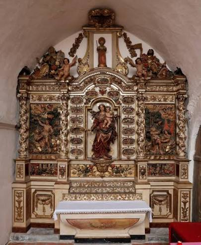

Sculpture sur Bois
CatalaneL'art des retables baroques du Roussillon


⟹ Art baroque catalan du Roussillon ⟸
La sculpture sur bois catalane possède des racines bien antérieures au baroque. Dès l'époque romane, les églises des Pyrénées catalanes abritent statues de la Vierge, Christs en majesté, devants d'autel et éléments de mobilier liturgique sculptés ou peints. Le bois, disponible et relativement léger, permet de créer des images destinées aux autels et aux processions. À l'époque gothique, retables peints et sculptés deviennent progressivement de vastes architectures narratives organisant saints, scènes bibliques et dévotions locales.

Après le concile de Trente (1545-1563), l'image religieuse prend une importance renouvelée dans le monde catholique. Le retable devient un instrument de dévotion et d'enseignement autant qu'un décor monumental. Dans les églises catalanes, les XVIIe et XVIIIe siècles voient se multiplier ces ensembles de bois sculpté, peint et doré. Même les paroisses modestes cherchent à embellir leurs chapelles, souvent grâce aux confréries, aux communautés d'habitants, aux dons privés et aux revenus affectés au culte.
Le Roussillon connaît alors une situation artistique singulière. Le traité des Pyrénées de 1659 rattache à la monarchie française le Roussillon, le Conflent, le Vallespir, le Capcir et une partie de la Cerdagne, mais la frontière politique n'interrompt pas les circulations humaines et artistiques. Sculpteurs, peintres, doreurs, modèles gravés et pratiques d'atelier continuent de franchir les Pyrénées. L'art religieux local reste profondément inscrit dans l'espace culturel catalan tout en recevant progressivement des influences françaises.
La réalisation d'un grand retable est une entreprise collective. Un menuisier ou architecte de retable construit l'ossature ; le sculpteur taille statues, colonnes, chapiteaux, rinceaux, angelots et reliefs ; peintres et doreurs appliquent apprêts, couleurs et feuilles métalliques. Les contrats précisent souvent dimensions, iconographie, matériaux, délais et modèles à suivre. Les gravures diffusées à travers l'Europe fournissent aux ateliers un répertoire de compositions, de gestes et d'ornements qu'ils adaptent au goût local.
Au XVIIe siècle, les retables deviennent de plus en plus architecturés et théâtraux. Colonnes torses, pampres de vigne, feuilles d'acanthe, fruits, anges et nuées encadrent des niches profondes et des scènes en relief. La polychromie anime les carnations et les vêtements ; la dorure à la feuille capte la lumière des cierges et transforme le chœur en véritable décor sacré. L'effet recherché n'est pas seulement décoratif : il doit rendre la présence des saints sensible et spectaculaire pour le fidèle.
Plusieurs dynasties et ateliers marquent cette période. Lluís Generes est documenté dans le Conflent au XVIIe siècle. La famille Sunyer, venue de Manresa, joue ensuite un rôle majeur. Josep Sunyer réalise notamment le retable du maître-autel de l'église Saint-Pierre de Prades : un contrat de 1696 prévoit son achèvement en trois ans et l'ensemble est daté de 1699. Avec environ 15,5 mètres de haut pour plus de 11 mètres de large selon l'inventaire des Monuments historiques, cette œuvre donne la mesure de l'ambition atteinte par les ateliers roussillonnais.
Josep Sunyer et son entourage travaillent dans de nombreux sanctuaires des Pyrénées-Orientales. On retrouve son nom ou celui de son école à Prades, en Cerdagne et dans le Conflent ; il intervient également dans le décor du camaril de l'ermitage de Font-Romeu au début du XVIIIe siècle. Le retable de l'Annonciation provenant de l'ermitage Notre-Dame-de-Vie, attribué à Sunyer et daté de 1715, témoigne aussi de la diffusion de son atelier autour de Villefranche-de-Conflent.
D'autres sculpteurs contribuent à la richesse de ce paysage : les Tremullas, dont Lazare Tremullas est associé à d'importants décors de la cathédrale de Perpignan, les Generes, les Navarre et de nombreux maîtres aujourd'hui moins connus. Au milieu du XVIIIe siècle, Joseph Navarre illustre une phase de transition : son œuvre conserve la monumentalité du grand retable roussillonnais tout en intégrant un goût français plus épuré. L'histoire de la sculpture locale n'est donc pas figée dans un « baroque catalan » unique ; elle évolue continuellement au gré des générations et des commanditaires.
Le choix des bois dépend de la fonction des éléments. Les inventaires patrimoniaux mentionnent notamment pin, tilleul et autres essences pour des retables sculptés, peints et dorés. Les blocs destinés aux statues doivent être suffisamment homogènes pour recevoir une taille fine ; les grandes architectures nécessitent au contraire des pièces résistantes et assemblées. Le sculpteur travaille successivement à la hache ou à l'herminette pour dégrossir, puis aux gouges, ciseaux et fermoirs pour établir volumes, drapés, visages et ornements.
La sculpture n'est cependant qu'une étape. Une fois le bois achevé, les surfaces destinées à être dorées reçoivent généralement plusieurs couches préparatoires qui masquent le grain et permettent un poli très fin. La feuille d'or est ensuite posée, brunie ou laissée mate selon les effets recherchés. Les vêtements peuvent recevoir des décors gravés ou peints ; les carnations sont polychromées. Cette superposition explique que la restauration d'un retable mobilise aujourd'hui plusieurs spécialités : conservation du support en bois, traitement des assemblages, consolidation des apprêts, nettoyage des peintures et sauvegarde des dorures.
La Révolution française, les changements de goût et la réorganisation des églises bouleversent ce patrimoine. Certains retables sont démontés, déplacés ou remaniés. Des œuvres provenant de sanctuaires supprimés trouvent refuge dans les églises paroissiales : à Villefranche-de-Conflent, un retable de Josep Sunyer provenant de l'ermitage Notre-Dame-de-Vie est ainsi transféré en 1793. Au XIXe siècle, d'autres ensembles sont repeints ou restaurés ; les interventions des frères Oromi dans plusieurs églises des Pyrénées-Orientales témoignent de cette nouvelle phase de l'histoire des retables.
À partir du XIXe et surtout du XXe siècle, historiens de l'art, services des Monuments historiques et restaurateurs commencent à inventorier et protéger systématiquement ces œuvres. Leur étude révèle l'ampleur des réseaux d'ateliers et la mobilité des artistes entre Catalogne du Nord et du Sud. Les restaurations contemporaines cherchent désormais à conserver non seulement la sculpture, mais aussi les polychromies, dorures, repeints anciens et traces d'assemblage qui documentent plusieurs siècles de transformations.
Aujourd'hui, les retables de Prades, Perpignan, du Conflent, du Vallespir, de Cerdagne et des autres vallées roussillonnaises constituent l'un des ensembles les plus spectaculaires du patrimoine catalan. Ils rappellent que la sculpture sur bois était à la fois un art, un métier organisé et une économie locale associant de nombreux artisans. Leur conservation permet aussi de comprendre comment une tradition médiévale de l'image en bois s'est transformée, à l'époque moderne, en un langage baroque monumental avant de devenir un patrimoine majeur à transmettre.
Le plus somptueux et le plus parfait des grands retables roussillonnais.
— Marcel Durliat, historien d'art, à propos du retable de VinçaAutour des grands maîtres gravitait tout un atelier : compagnons, doreurs, peintres polychromeurs se partageaient les tâches sous la direction du sculpteur principal, seul signataire du contrat passé avec la paroisse. Ce mode d'organisation collectif explique la cohérence stylistique des grands ensembles catalans malgré leur ampleur, certains retables comptant plusieurs dizaines de statues et de bas-reliefs.
Chaque paroisse, même modeste, tenait à posséder son retable, contraste saisissant entre la pauvreté de l'édifice et la richesse de son mobilier.
— Tradition de l'art baroque roussillonnaisCette tradition ne s'est jamais complètement éteinte : des ateliers de restauration du Conflent et du Roussillon perpétuent aujourd'hui les gestes de la sculpture polychrome et de la dorure à la feuille, au service de la conservation de ce patrimoine exceptionnel, tandis que des artisans d'art s'en inspirent pour des créations contemporaines.
Prades capitale du Conflent, son église Saint-Pierre abrite le plus grand retable baroque de France, chef-d'œuvre de Josep Sunyer.
Vinça son retable de la Transfiguration est considéré par les historiens de l'art comme l'un des plus accomplis du Roussillon.
Espira-de-Conflent ce village abrite plusieurs retables baroques ainsi que la seule copie connue en France d'une œuvre de Rubens.
Abbaye Saint-Michel-de-Cuxa à quelques kilomètres de Prades, elle complète ce parcours patrimonial entre roman et baroque catalans.